La tradición ecuatoriana, reinventada.
Alta cocina cuencana en el Complejo Patrimonial Todos Santos: productos nativos, técnicas ancestrales y modernas, y un menú que cambia cada semana según la temporada.
Nuestra historia
CURU nació en 2022 del sueño del chef Sebastián Martínez y la administradora Estefanía Ordóñez: democratizar la alta cocina, para que comer bien sea una opción diaria.
En el corazón del Complejo Patrimonial Todos Santos, entre muros centenarios y un jardín que invita a quedarse, CURU fusiona la cocina ecuatoriana contemporánea con productos nativos y globales, y técnicas ancestrales y modernas.
Cada plato se planifica a diario según los productos de temporada y los proveedores locales. La vajilla, elaborada por artesanos locales en alfarería, metalurgia y madera, cuenta también la historia de Cuenca.
Por eso el menú cambia cada semana: cada visita es una experiencia distinta, y cada reserva nos permite calcular lo justo, con desperdicio casi cero.
“Respetamos las raíces, pero siempre buscamos sorprender.” — Chef Sebastián Martínez
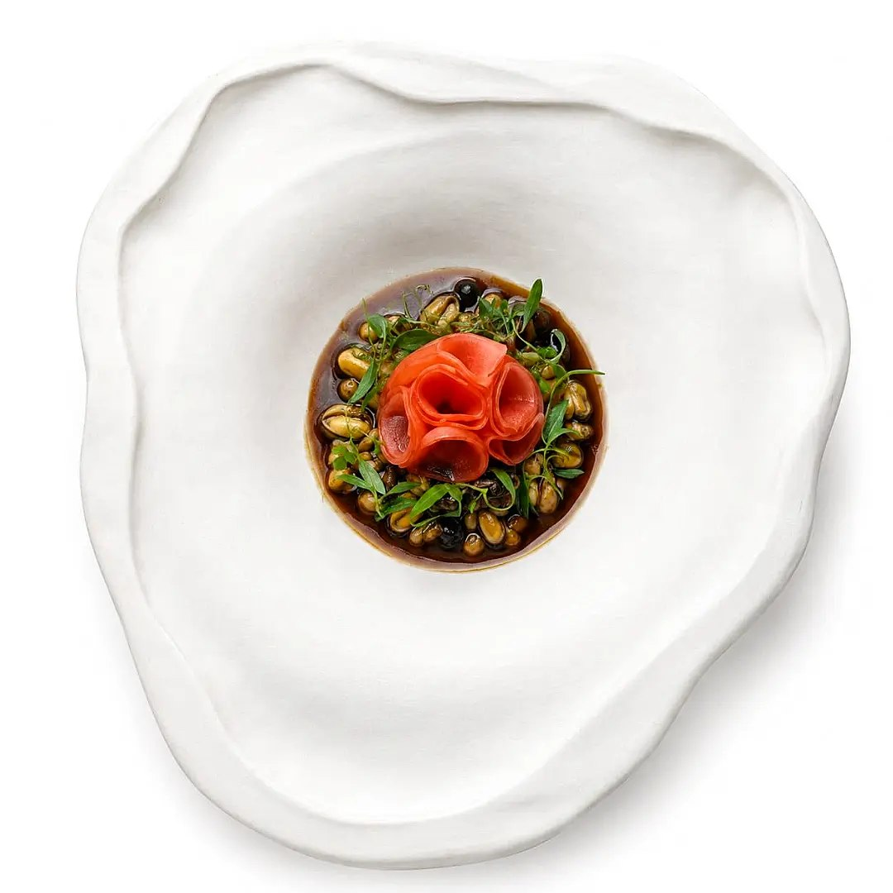
Platos insignia
Estos son algunos de los platos que han hecho conocido a CURU. Como el menú cambia cada semana, pregunta cuáles están disponibles en tu visita.
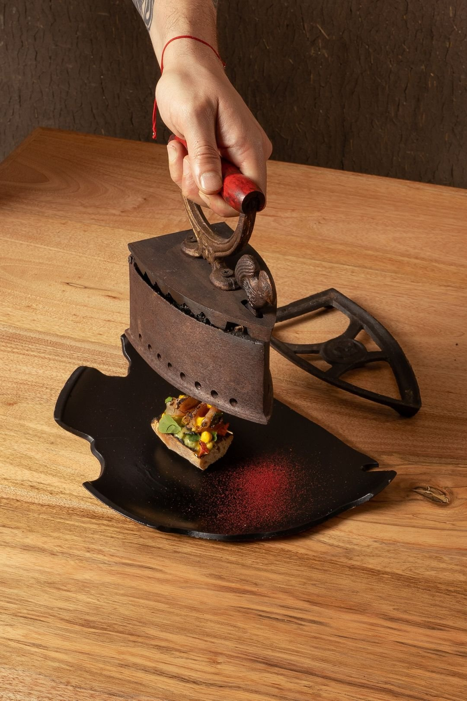
Inspirado en los sastres antiguos y su plancha de carbón: bruschetta de masa madre, aguacate, jamón de llama y yema de huevo runa ahumada al minuto en liquen y musgo.
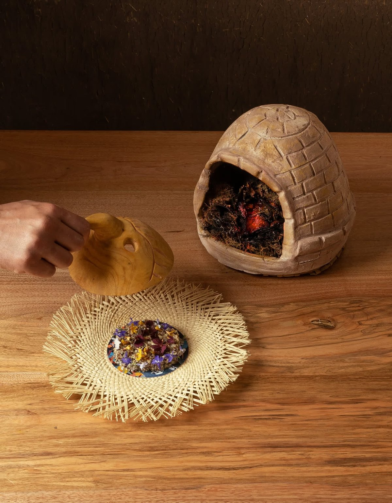
Del mini horno de barro con máscara de madera inspirada en la fiesta de Píllaro: base de macedonia de quinuas y amaranto, chicken mushroom bañado en barbacoa de café y tabaco, asado en hojas de páramo.
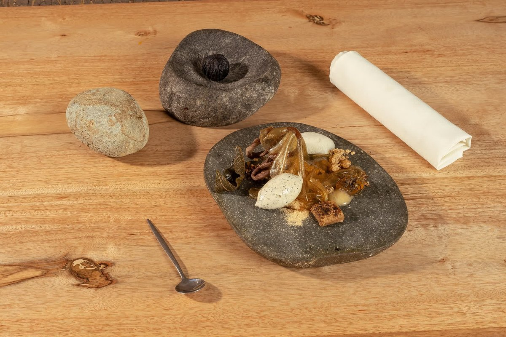
El postre que transporta a la infancia: mimético de tocte de chocolate, relleno de crema de melcocha, helado de hojas de nogal, nogada de panela, ramas de chocolate, aire de romero, ortiga y velo de licor de tocte.
De su Instagram
Platos publicados por CURU en su Instagram @curu_rest en octubre de 2026. Así se ve el menú que cambia cada semana.
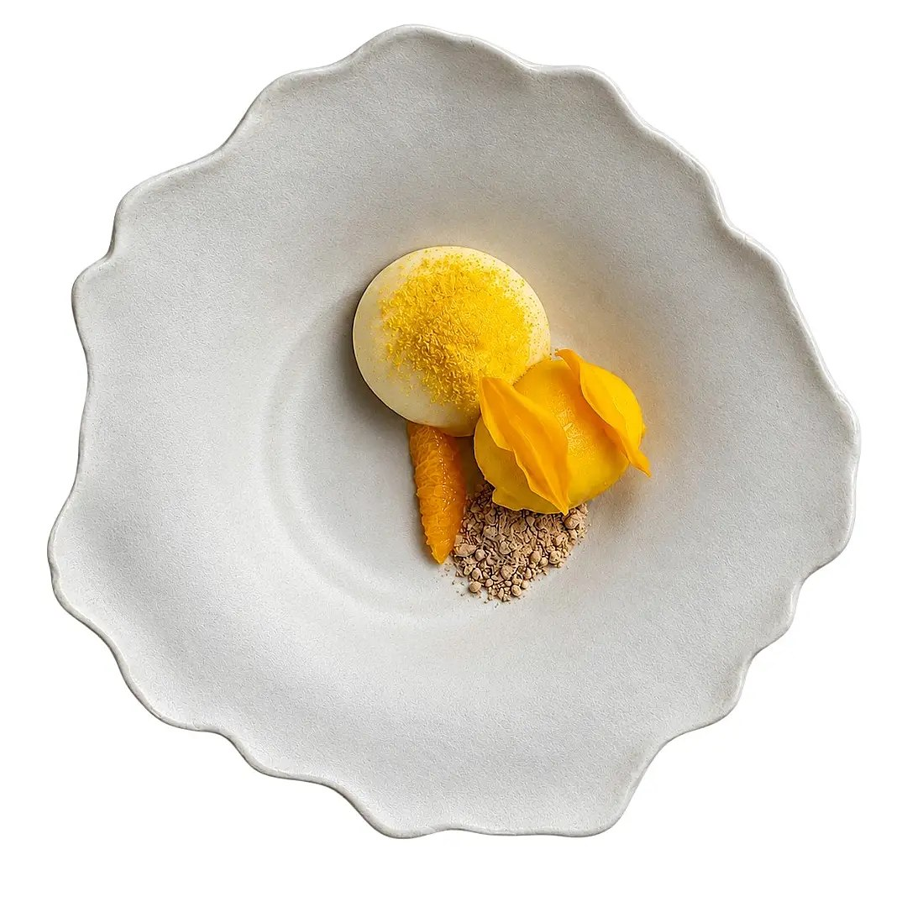
Publicado el 24 de octubre de 2026. Un postre que juega con la misma fruta en dos texturas.
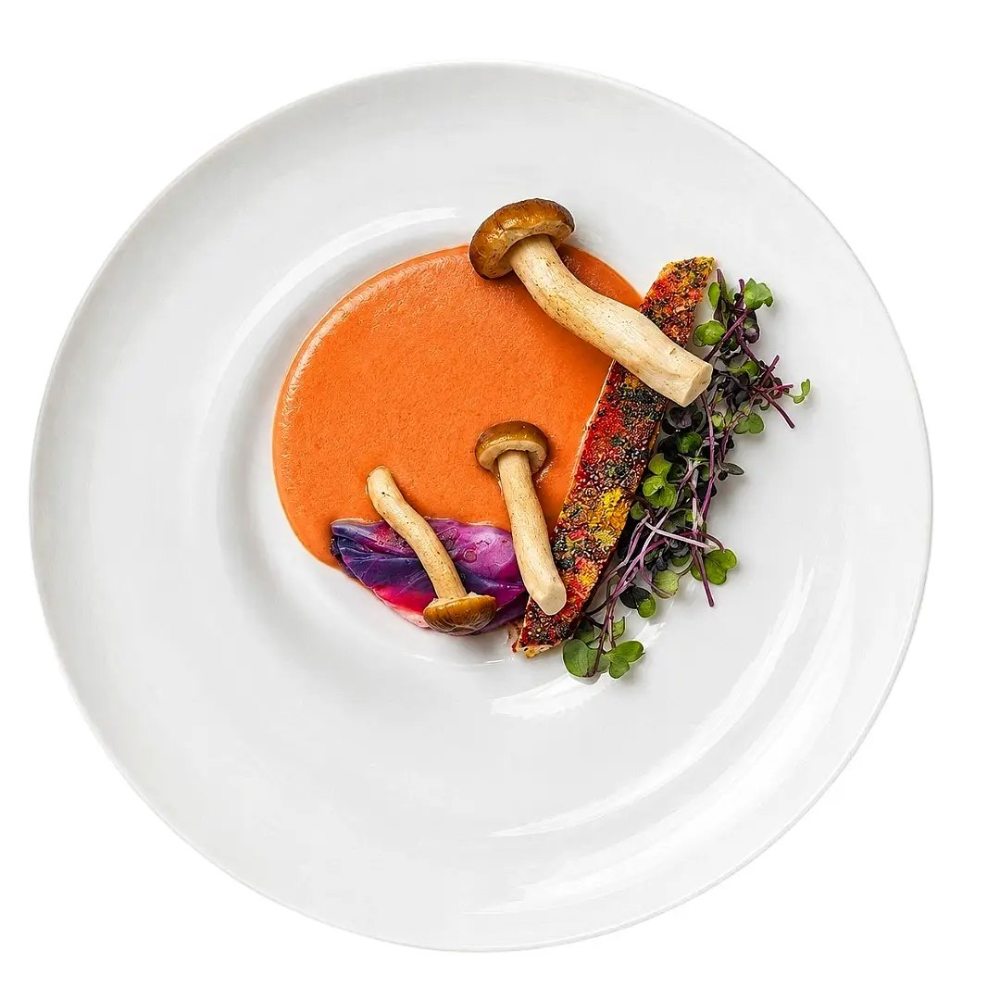
Publicado el 23 de octubre de 2026. Producto local tratado con técnica contemporánea.
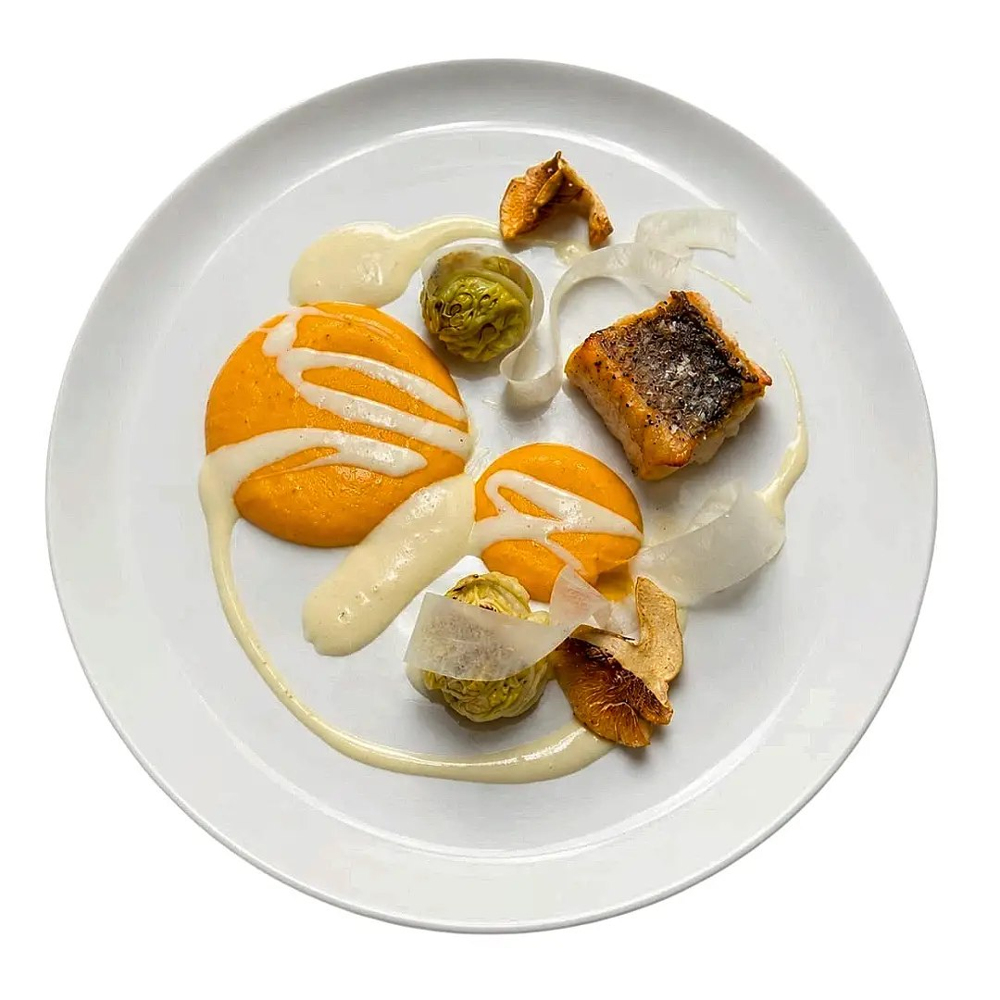
Publicado el 16 de octubre de 2026. Piel tostada, setas y crema de zapallo.
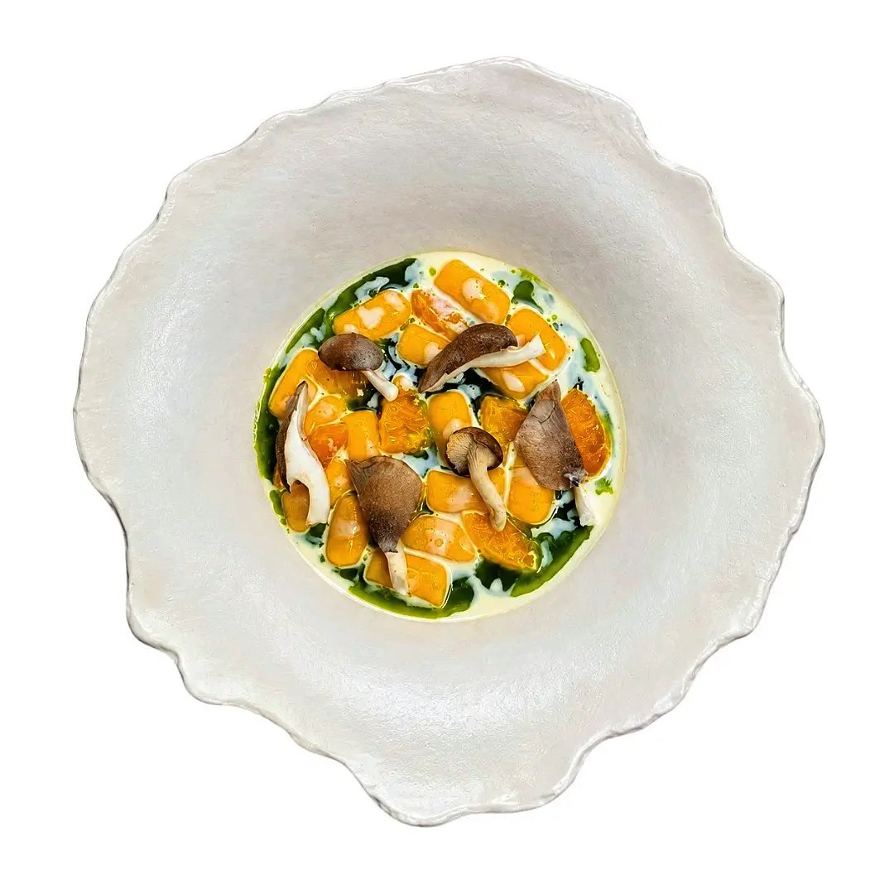
Publicado el 16 de octubre de 2026. Con mandarina, leche de queso azul y hongos black pearl.
El lugar
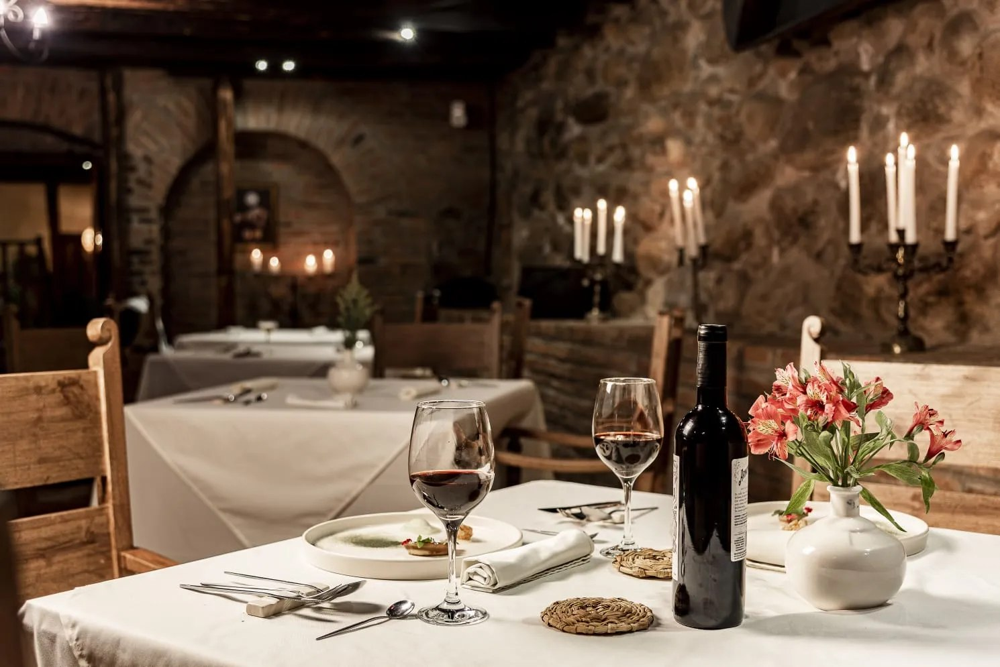
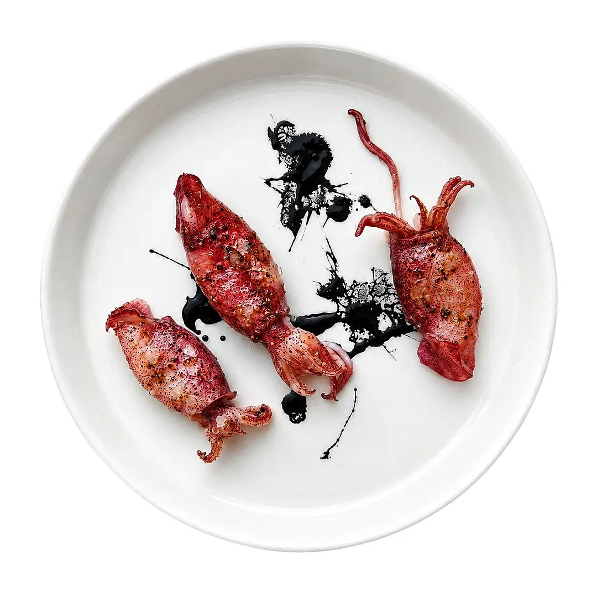
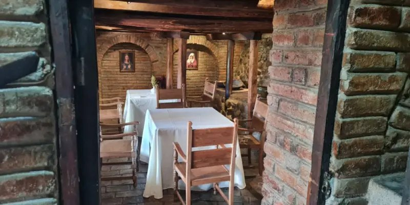
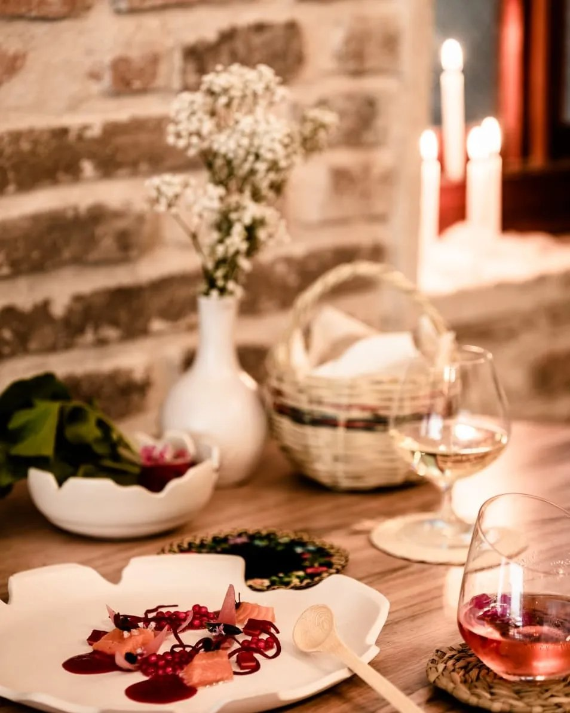
Calendario de reservas
Elige tu experiencia, el día y la hora. Tu solicitud llega directo al WhatsApp de CURU y el restaurante te confirma la reserva.
Domingos y lunes cerrado. Las reservas se confirman por WhatsApp. Para grupos de más de 10 personas o eventos privados, el restaurante coordina un menú a medida.
Lo que dicen quienes ya vinieron
4.6 de 5 en Google Maps. Esto dicen los visitantes en TripAdvisor:
“Una aventura culinaria increíble a un precio muy accesible, con vista, un servicio muy amable y chefs que van más allá. Vale la pena visitarlo para sorprender a tu paladar.”
“Nunca he comido dos veces lo mismo. Cocina por tiempos en su mejor expresión. Siempre excelente: una verdadera experiencia gastronómica.”
Visítanos
En el centro histórico de Cuenca, dentro del Complejo Patrimonial Todos Santos. Llega temprano: el espacio es íntimo y las mesas vuelan, sobre todo al mediodía.
Complejo Patrimonial Todos Santos, Calle Larga 494y, Cuenca, Ecuador
Martes a sábado desde las 12h30
Sábados desde las 12h30
Jueves, viernes y sábados desde las 19h30
Cerrado
Pregúntame por menús, reservas, horarios y ubicación.